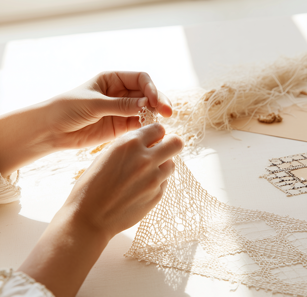

NAŠA RADIONICA
Dobrotska čipka jedno je od najvažnijih nematerijalnih kulturnih dobara Crne Gore. Izrađuje se ručno, ponat po ponat, tradicionalnom tehnikom koja se prenosi generacijama i zahtijeva vrijeme, strpljenje i preciznost.
U radionici Mustrica, smještenoj u starom gradu Kotora, okupljamo lokalne zanatlije i umjetnike posvećene očuvanju i savremenoj primjeni ove vještine. Svaki komad nastaje ručno, bez žurbe i bez ponavljanja – kao jedinstven trag ruke koja ga je stvorila.
Dobrotsku čipku ne doživljavamo samo kao ukras, već kao dio kulturnog identiteta i živo nasljeđe koje treba da se koristi, uči i dijeli. Kroz radionice, izložbe i direktan rad sa posjetiocima nastojimo da ovu vještinu približimo široj publici.
U našem shopu dostupni su unikatni proizvodi, kao i mogućnost narudžbine čipke po mjeri – spoj tradicije i savremenog života, nastao ponat po ponat.

PONAT PO POMAT
Vještina izrade dobrotske čipke zaštićeno je nematerijalno kulturno dobro Crne Gore. Dobrotska čipka je dobila naziv po naselju Dobrota i predstavlja lokalnu verziju italijanske čipke a od nje se razlikuje po karakterističnim motivima koji su uglavnom geometrijski i čvršćim načinom izrade. Za izradu dobrotske čipke koristi se igla, konac, naprstak i makazice. Materijali koji se koriste su lan ili pamučno platno. Čipka se izrađuje preko papira koji je fiksiran za čvršću podlogu na kojem se koncem oblikuje motiv. Potrebno je tri do četiri sata rada da bi se uradio jedan najmanji jednostavan motiv.
Organizacijom radionica kao i apliciranjem čipke na upotrebne predmete širi se svijest stanovništva o postojanju i važnosti ove vještine. Ova stara i značajna vještina, kao nematerijalno kulturno dobro od nacionalnog značaja, mora da bude živa da bi zadržala taj status. Upoznavanjem lokalnog stanovništva sa osnovima vještine izrade dobrotske čipke se nastavlja čuvanje i život ovog značajnog nematerijalnog kulturnog dobra.